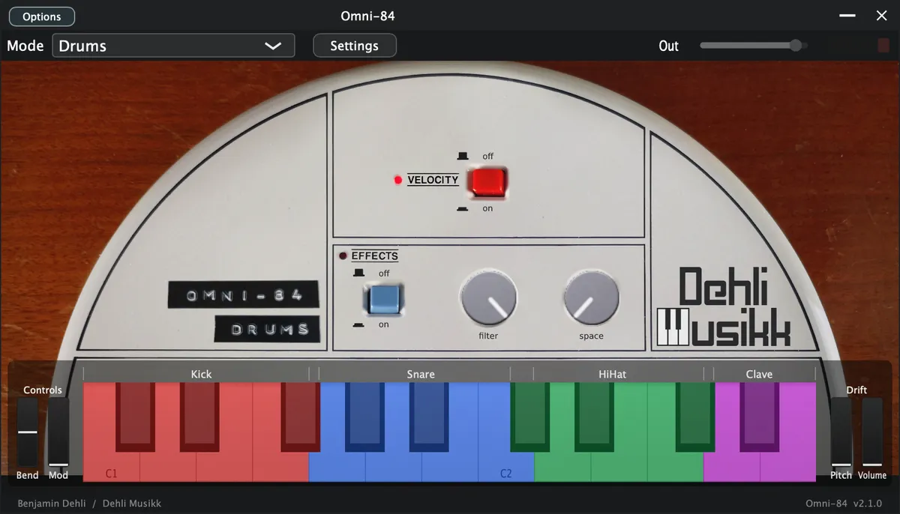
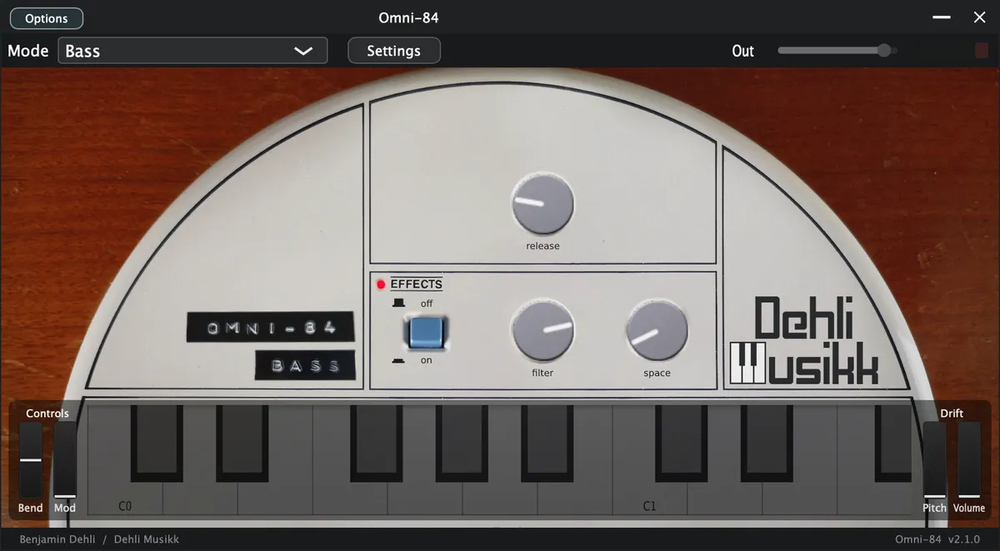
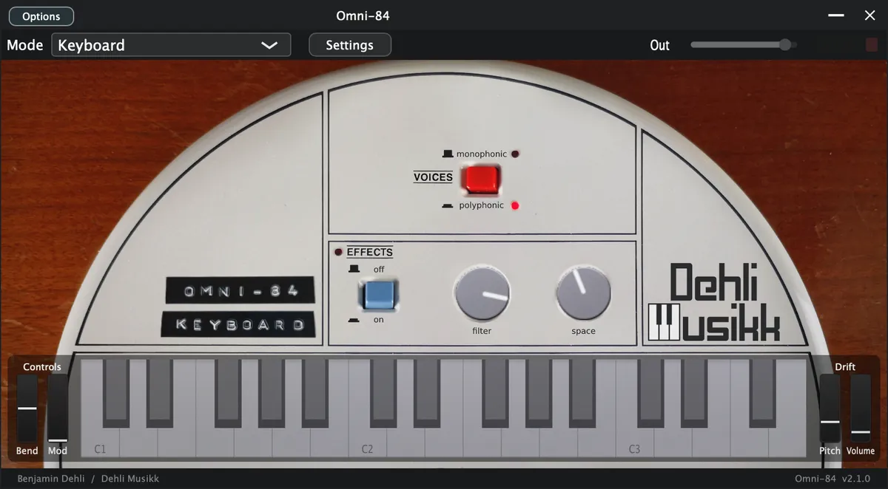
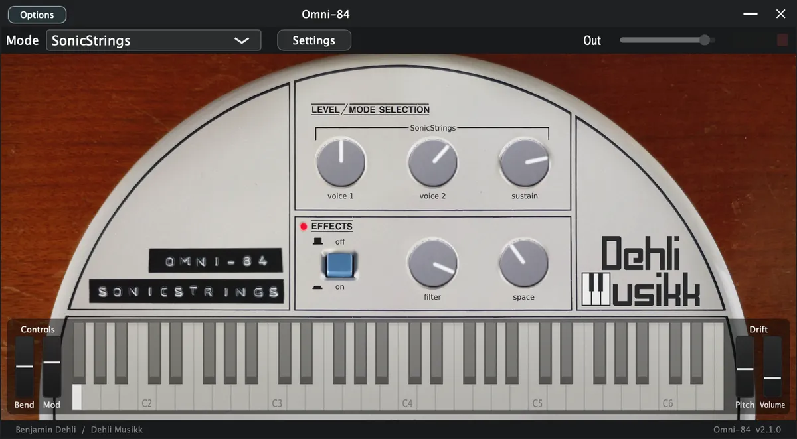
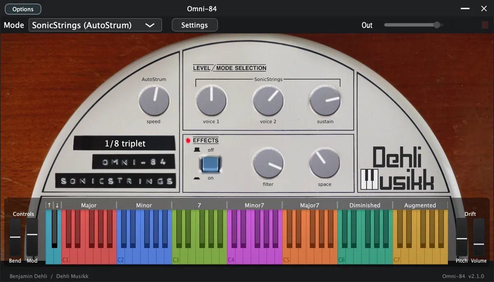
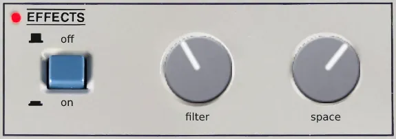

Video
A demonstration of the Omni-84 library for Decent Sampler.
Included formats
- VST3 (macOS)
- AU (macOS)
- Standalone application (macOS)
- Decent Sampler (macOS, Windows and Linux)
The plugin version is currently released for macOS only. Windows and Linux versions are planned. Until then, the Decent Sampler version covers those platforms.
The plugin version
The plugin is a self-contained instrument, available as VST3, AU and Standalone. Samples, graphics and impulse responses are all embedded in the plugin itself, losslessly compressed, so there are no external files to install or locate. Only the samples for the selected preset are loaded into memory, and a fresh instance lets you choose which preset to load before anything is decoded.
The plugin has all the controls and features from the Decent Sampler version, including MIDI learn, the master volume fader with output meter, value readouts for the knobs and full DAW automation. On top of that, the plugin version adds:
- Drift wheels next to the pitch and modulation wheels, adding a subtle random pitch and volume drift to each voice.
- A velocity curve setting in the settings menu, and tempo sync for the AutoStrum speed.
- An improved AutoStrum mode that works like the real instrument. See the section "SonicStrings (AutoStrum)".
- Labels above the on-screen keyboard for the chord and strum keys.
The Decent Sampler version
This version of Omni-84 is an instrument preset / sample library for Decent Sampler. If you're new to Decent Sampler, I recommend checking out this guide first.
Technical specification
- Sample rate: 48 kHz
- Bit depth: 24 bit
- Number of samples: 277
- File size for samples: 241.3 MB
- Channels: 1 (mono), 2 (stereo) for impulse response
Instrument presets
This instrument includes 5 (plus 1 looped) presets, one for each part of the Omnichord. Drums, Bass, Chords, Keyboard and SonicStrings. There's 2 presets for chords, a regular preset "Chords" (best in most cases) and the looped preset "Chords (Looped)". For the regular version, each sample are approximately 11 seconds long. For the looped version, to achieve the best possible loop point, some of the loops are short and some are longer. Some of the loops will however have some minor artifacts. For best audio quality, you should always use the regular version. And only if you have notes held for more than 11 seconds, use the the looped version.
Drums

- Velocity
- Toggle whether the velocity should affect the volume or not
- Keys
- C1-F#1: Kick drum
- G1-C2: Snare drum
- C#2-F#2: Hi-hat
- G2-A2: Clave
Bass

- Release
- How long the note sustains after the key is released
Chords
- Keys
- C1-B1: Major chords
- C2-B2: Minor chords
- C3-B3: 7th chords
- C4-B4: Minor 7th chords
- C5-B5: Major 7th chords
- C6-B6: Diminished chords
- C7-B7: Augmented chords
Keyboard

- Voices
- Monophonic
- Plays only one note at the time, like the original Omnichord
- Polyphonic
- Plays multiple notes at the time
- Monophonic
The keyboard samples loop after about 12 seconds to achieve a continuous sound. Each loop point is carefully picked and phase aligned to avoid audible artifacts.
SonicStrings

- Voice 1 (vibrato voice)
- Controls the volume of SonicStrings voice 1 samples
- Voice 2 (standard voice)
- Controls the volume of SonicStrings voice 2 samples
- Sustain
- The tone produced on the original Omnichord has the same length whether you keep your finger on the strum plate or release it. The length of the note is set by the control labeled sustain. To achieve the same behaviour in this plugin, the sustain knob affects both the decay time and the release time of the volume envelope.
SonicStrings (AutoStrum)

The notes are strummed in the same order as the original Omnichord. The preset contains strum patterns for all the individual chords from the Suzuki Omnichord OM-84. It has the same notes values for the chords as the Omni-84 'Chords' preset, which means you can send MIDI to both at the same time and get strummed SonicStrings on top of the chord sample.
- AutoStrum (speed)
- Fast strum speed will sound like a chord and slow strum speed will sound like plucked notes.
- Modulation Wheel
- Controls the AutoStrum (speed)
- Key bindings
- C0: Strum with ascending notes
- D0: Strum with descending notes
- Other controls are the same as on the regular "SonicStrings" preset
- Other key bindings are the same as on the "Chords" preset
In the Decent Sampler version:
- The chord keys start the strum
- The C0 and D0 keys select the strum direction.
In the plugin version:
- AutoStrum works more like the real instrument
- The chord keys only select the chord, and the C0 and D0 keys perform the strum.
- Changing the chord while notes are still ringing morphs the sounding notes over to the new chord instead of restarting the strum.
- The strum speed can be synced to the DAW tempo or to a manual BPM from the settings menu.
- When synced, the strum speed knob scrolls through musical note values from 1/4 to 1/32, including triplet and dotted values, and the current value is shown where the strum pattern menu is in the Decent Sampler version.
- Labels above the on-screen keyboard show which keys select chords and which keys strum.
Effects

- Filter
- Controls the cutoff frequency for the lowpass filter
- Space
- Controls the reverb amount for the impulse response / convolution reverb
Audio files
- 22 drum samples
- 19 bass samples
- 84 chord samples
- 32 keyboard samples
- 120 SonicStrings samples
Impulse response (Space)
- Roland PA-120 preamp
- Fulltone Tube Tape Echo
- Roland PA-120 spring reverb
- Roland Dimension D SDD-320
The impulse signal was sent through a channel on the Roland PA-120 mixer so that the built-in spring reverb as well as a tape echo in the effects loop could be used. The preamplifier in the mixer also adds some nice saturation. The mixer and effects are all mono, so I ran it through a Dimension D to make it stereo and add some extra modulation.
Release notes
Version 2.1.02026-08-01
Plugin version:
- Added a translucent overlay graphic on top of the interface.
- Keys that are hovered or held on the keyboard are now shaded in a neutral way instead of turning yellow:
- White keys turn darker.
- Black keys turn brighter.
- The computer keyboard keeps playing notes even while you adjust a control with the mouse.
- With tempo sync turned on, the AutoStrum Strum Speed knob now snaps to exact note values such as 1/4, 1/8 and 1/16 as you turn it.
- Drums mode now shows labels above the keyboard for each drum group (Kick, Snare, HiHat and Clave), matching the chord labels in the Chords modes.
DecentSampler version:
- Increased the default volume of the drums.
- Moved the AutoStrum strum keys from C0 and D0 to A0 and B0.
The DecentSampler changes are also included in the plugin version.
Version 2.0.02026-07-19
- Added a plugin version. See the section "The plugin version".
- Improved AutoStrum in the plugin version: the chord keys select the chord, the C0 and D0 keys perform the strum, and chord changes morph notes that are still ringing.
- Simplified the AutoStrum strum patterns to Ascending and Descending.
- The filter knob now uses a translation table for a smoother frequency response.
- Removed the unreliable length and sampleRate attributes from the sample definitions.
Sample lengths are now read from the audio files.
Version 1.3.02025-01-04
- Removed amplitude envelope for one shot samples
Version 1.2.02024-03-23
- Added "SonicStrings (AutoStrum)" preset
Version 1.1.02024-02-16
- Added "Chords (Looped)" preset
Version 1.0.02023-04-06
- First version released
About this repository
This repository contains the source for both the Decent Sampler library (the DecentSampler folder) and the plugin version. The plugin is a thin wrapper around the shared Dehli Musikk sampler engine, and a converter translates the Decent Sampler library into the engine's native preset format at build time. The audio files are not part of this repository, since the samples are a paid product. The full version is available from store.dehlimusikk.no.